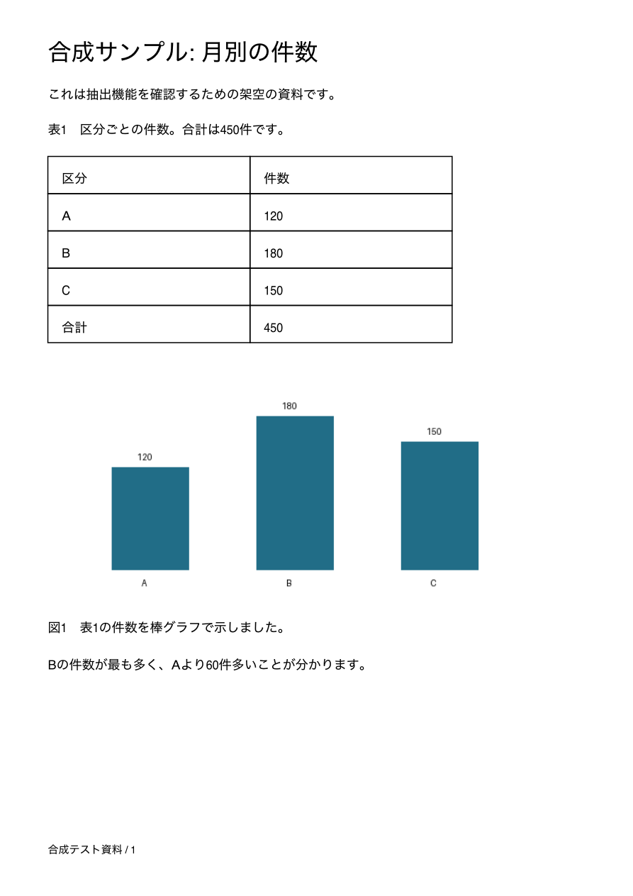
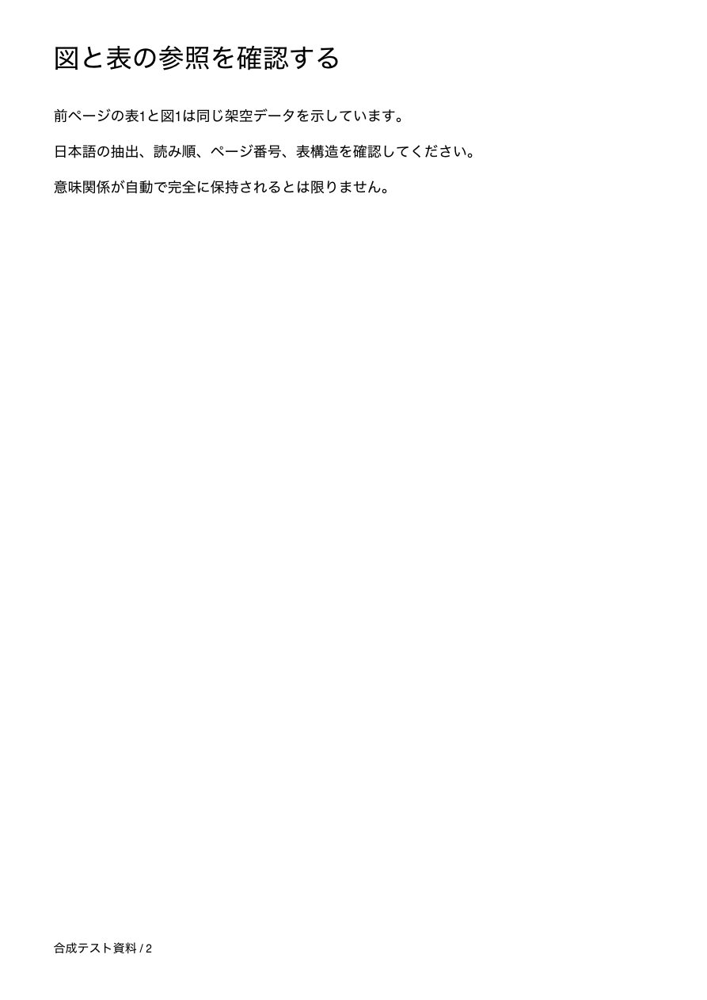

<!doctype html><html lang="ja"><meta charset="utf-8"><style>body{margin:16px;background:#e9edf0;font-family:sans-serif}img{width:100%;max-width:1100px}figure{margin:0 0 24px}figcaption{margin:8px}</style><figure><figcaption>原本 1 ページ</figcaption></figure><figure><figcaption>原本 2 ページ</figcaption></figure></html>